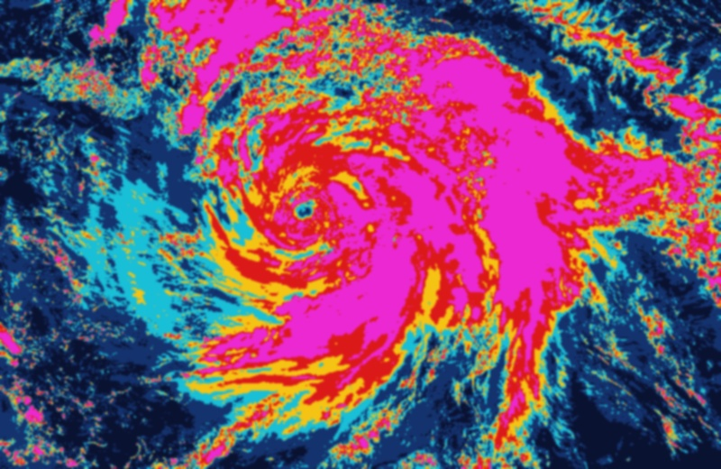

Storm Detection
Tropical Cyclone
Satellite Cloud Scan Active
Storm Danger Level
Very Severe Cyclone
Wind Speed & Air Pressure
Center: 19.8°N, 68.4°E
Storm Growth Risk
ALERTFast Strengthening
Real-time Open-Meteo & IMD RSMC Arabian Sea telemetry ingested. Currently fair-weather calm; no active cyclonic storm exists in the basin.
Data Authority Provenance
NOAA NCEI IBTrACS & IMD RSMC Official Record
Hourly Route & Wind Speed
Location, wind speed and coast distance for every hour
Choose Time:
Cyclone Genesis & Growth
Watch the storm gradually form and intensify step-by-step
OFFICIAL STORM WARNING
High alert issued for Coastal Gujarat & Saurashtra. System is categorized as Very Severe Cyclone. Reaching coast within 24 to 36 hours.
Hour-by-Hour Storm Route & Waypoints
Tracking storm movement, wind velocity, and distance to Gujarat coastline.
| Time | Location Coords | Wind Speed | Top Gusts | Nearest Area | Distance to Coast | Status | Radar View |
|---|
Gujarat Ports & Harbor Warning Status
Real-time harbor danger signals, sea surge risk, vessel safety, and direct radar coordinates.
Jakhau Port
23.23°N, 68.73°E • Deep-Sea Harbor
Kandla / Deendayal Port
23.00°N, 70.22°E • National Cargo & Oil
Mandvi Beach & Dhow Port
22.83°N, 69.35°E • Shipbuilding Harbor
Dwarka & Okha Port
22.24°N, 68.96°E • Ferry & Fisheries Terminal
Porbandar Fishing Harbor
21.64°N, 69.60°E • Mechanized Fleet Hub
Veraval / Somnath Harbor
20.90°N, 70.36°E • Commercial Fisheries & Export
Port will experience severe storm weather from cyclone approaching from south or west. Safe anchoring mandatory.
Cyclone is expected to cross coast near or over the port. Strong gale winds and heavy coastal storm surge.
Cyclone will cross directly over the port. Extreme storm surge, hurricane-force winds, total port shutdown.
District Danger & Evacuation Guide
Based on storm wind speed, air pressure, and coast distance.
| District / Coastal Area | Danger Level | Sea Surge (Water Rise) | Top Gusts | Evacuated / Goal | Safety Steps & Action |
|---|
Government safety directive in force. Coastal communities along Kutch, Dwarka, and Saurashtra must initiate mandatory relocation to identified cyclone relief shelters. Deep-sea fishing strictly suspended. Harbor warning signals 9 & 10 hoisted at major ports.
Satellite Cloud Scanner
Live satellite views showing storm clouds, heat, and moisture.

Storm Strength & Cloud Data
Live storm category and cloud measurements.
Thermal heat camera measures cloud temperature. Very cold clouds (down to -85°C) highlight the strongest part of the cyclone around the center eye.